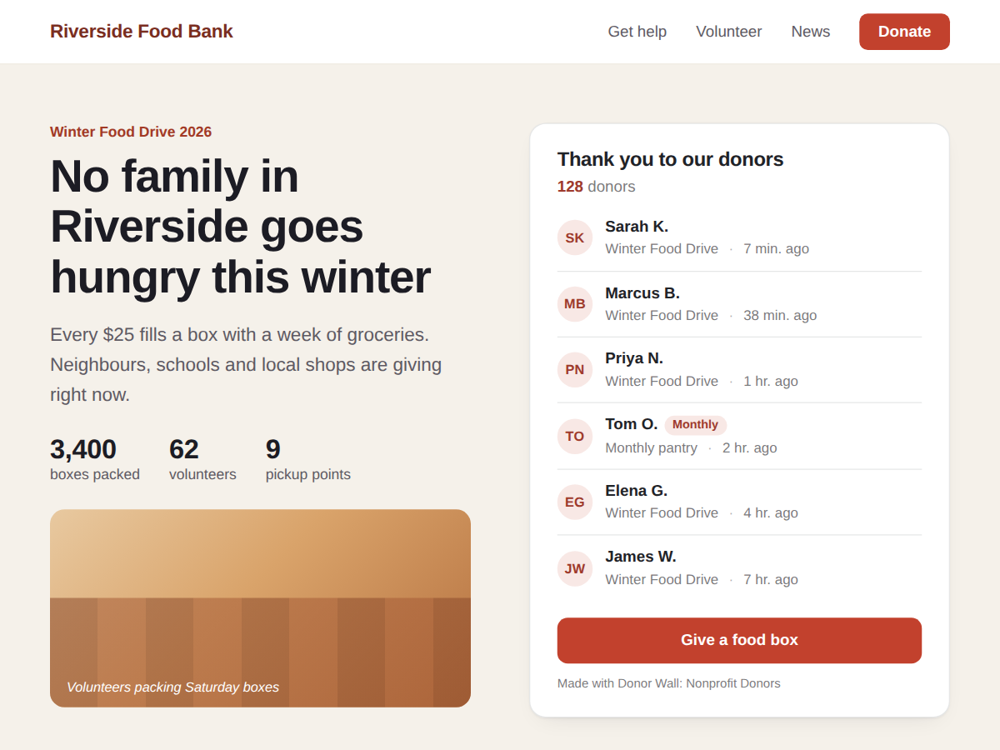

Donor Wall: Nonprofit Donors
Recent donations wall: thank your donors by name
- New donors show up by themselves within a minute
- First name + initial, amounts hidden by default
- Hide any donor, start the wall from a date
- Amounts, tiers and Today view (Premium)

What it does
Show the people who give to your cause, right on your fundraising page. Donor Wall reads the gifts your site takes through Donations and lists the newest donors with the campaign and when they gave: "Sarah K. · Winter Food Drive · 2 h ago". Someone gives at lunchtime and their name is on the wall within a minute.
Donors can't choose to stay anonymous at checkout, so the wall starts safe. It shows a first name and the last initial, never a full name, e-mail or address, and amounts stay hidden until you switch them on. You can show first names only, initials, or no names at all, hide any donor by name, and start the wall from a date so a new campaign begins with a clean list. Monthly donors get a small "Monthly" tag.
A line above the list counts your donors so far. Add a link to your donation page and a Donate button sits under the names. Colours, font and card match your site, also on phones.
The free plan shows your newest 10 donors as a list. Premium adds amounts and the total raised, tiers such as Gold and Silver, a filter for one campaign, a Today view for Giving Tuesday, donor messages, tile and ticker layouts and up to 50 donors, and removes the credit link.
Price
Free
- Newest 10 donors as a list
- First name + last initial
- Donor count and Donate button
- Small credit link
Premium
$5/month, yearly 20% off ($4/month)
- Amounts, total raised and tiers
- Campaign filter and Today view
- Donor messages, tiles and ticker
- Remove the credit link